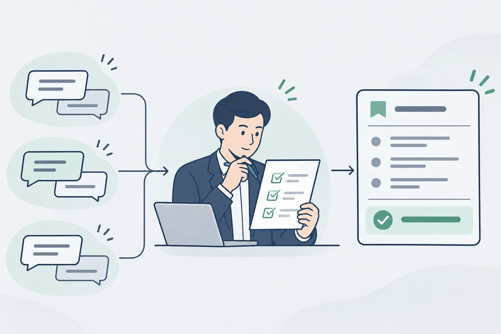

Article · 飞函
Article · 飞函
飞函全局搜索能找到什么，哪些决策要整理
项目负责人调岗后，接手人收到一句“之前在群里讨论过”。他或许能搜到相关消息，却仍要回答更关键的问题：最后采用了哪个方案？谁确认的？还有什么条件没有满足？
这正是交接中容易混淆的两件事：找回讨论线索，以及确认当前有效的决策。
搜索先帮人找到线索
飞函提供全局搜索和历史消息同步等能力。接手人可以围绕项目名称、需求编号、客户简称或关键问题检索，回看相关讨论，找到曾参与沟通的人，以及方案变化的上下文。比起让同事凭记忆转述，原始消息更适合用来核对“当时说了什么”。
搜索结果的价值取决于团队此前留下了什么。如果讨论只发生在线下会议，或者群里只写了“按会上说的办”，搜索无法补出会议结论。即使找到了多条讨论，也不能把其中一条意见直接当成最终决定。
决策要由负责人明确整理
以一次需求变更为例：群里先提出两个方案，随后有人提醒交付时间受影响，最后负责人在会议上确定了实施路径。接手人可能搜到前两段讨论，却看不出会议后哪个方案仍然有效。
交接时，原负责人应把需要执行的事项整理成一份简短记录，至少写清：
- 当前结论：采用什么方案，从何时开始执行；
- 决策依据：主要约束是什么，为什么放弃其他方案；
- 确认与执行责任：谁作出确认，谁负责下一步；
- 未决事项：还缺哪些信息，何时复核；
- 回溯线索：相关讨论、文档或会议材料在哪里。

这份记录应由了解决策的人确认，并在方案变化时更新。接手人可以用搜索核对记录背后的讨论；遇到相互矛盾的消息，则回到负责人处确认当前结论。
把交接变成可继续推进的工作
一个实用的做法是：先用飞函搜索梳理项目脉络，再由原负责人确认决策记录，最后让接手人按记录复述下一步动作和待确认事项。这样，搜索负责缩短找线索的时间，整理负责消除执行中的歧义。
当团队能清楚说出“现在按什么做、为什么、由谁继续做”，交接才算真正完成。